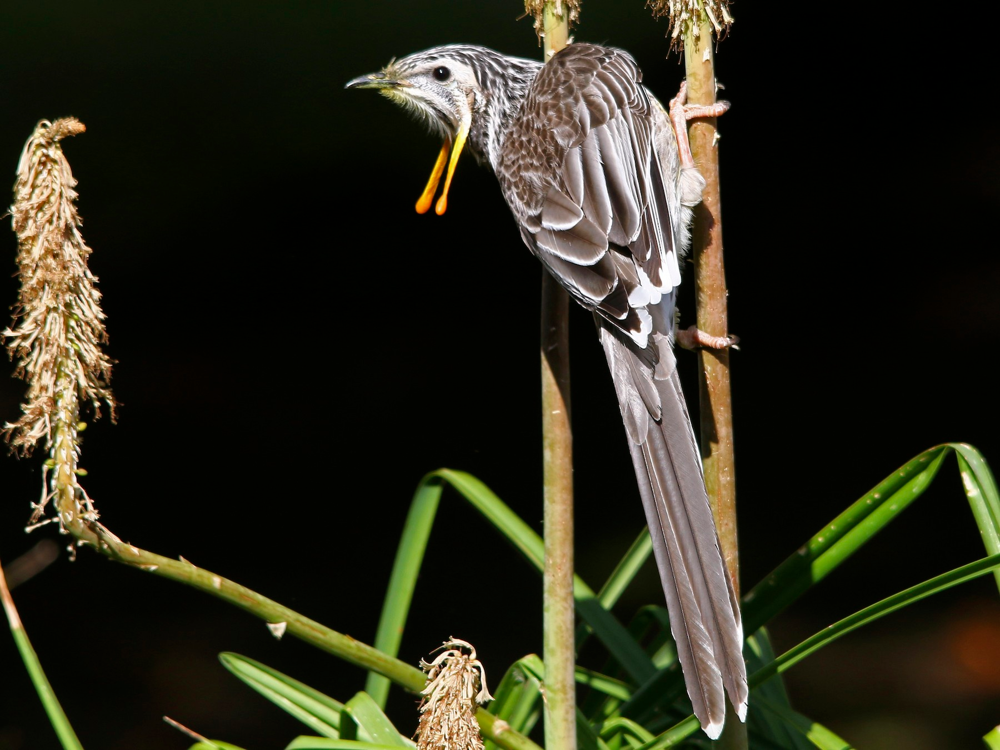

Anthochaera paradoxa
The Yellow Wattlebird is the largest of Australia's honeyeaters and is endemic to Tasmania. Their length is usually 37.5–45 centimetres (14.8–17.7 in) long.The male's average body mass is 168 g (5.9 oz)and in females often 123 g (4.3 oz) with the largest males weighing up to 260 g (9.2 oz).